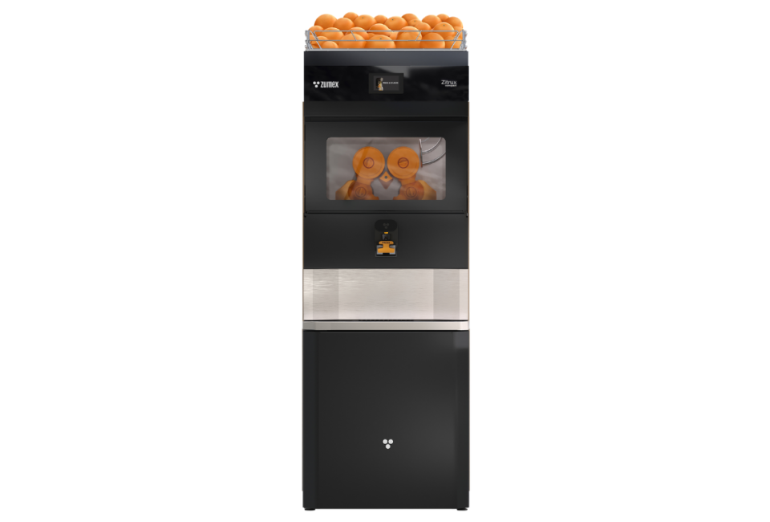
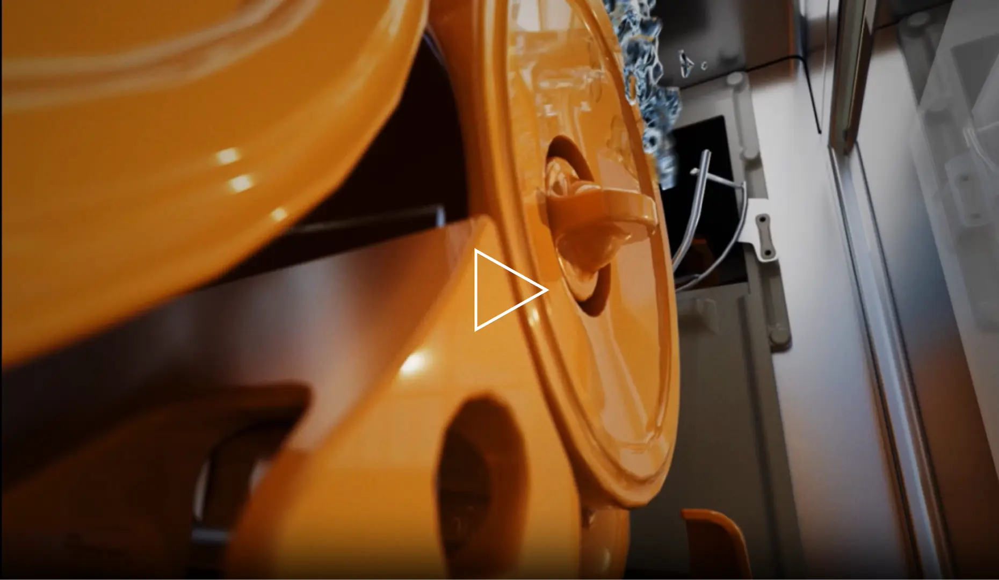

Samočisticí
Zitrux
Čerstvá šťáva. Čistá autonomie.
Samočisticí řešení pro supermarkety a velké prodejny. Zitrux spojuje vysokou kapacitu ovoce, nepřetržitý provoz a automatizované čištění.
Poptat tento produktCenu a dostupnost vám potvrdíme podle konfigurace.
40 plodů/minVýkon
75 kgKapacita ovoce
120 lOdpadní prostor
Navržen pro váš provoz.
Zitrux je kompletní samoobslužné řešení pro prodej čerstvé citrusové šťávy v supermarketu. Spojuje automatické podávání, lisování a samočisticí systém, který omezuje rutinní rozebírání lisovacího prostoru.
Zásoba až 75 kg pomerančů, automatický výtah a 120litrová kapacita odpadu umožňují dlouhé intervaly mezi doplňováním. Bezkontaktní kohoutek a interaktivní displej usnadňují nákup zákazníkovi i obsluhu personálu.
Velká kapacita pro vytížené prodejny.
Čerstvá šťáva přímo v místě prodeje.



CO ZPRACUJE
Suroviny pro Zitrux
Zitrux je jediný lis, který se sám čistí a sanitizuje. Je určený pro pomeranče:
- Pomeranče
- Kit M
- 65–81 mm
VYBERTE SI PROVEDENÍ
Jedna řada. Vaše konfigurace.
Zitrux
Instalaci naplánujeme jako celé prodejní místo včetně doplňování ovoce a přístupu k odpadu. Pro čištění je nutné dodržovat provozní a sanitární postupy výrobce.
Poptat variantuFotografie jsou ilustrační pro danou řadu. Výbava a technické parametry se mohou lišit podle varianty.
KOLIK MÍSTA POTŘEBUJE
Rozměry
- Výška1 920 mm
- Šířka1 750 mm
- Hloubka740 mm
- Hmotnost325 kg
- Půdorys1,29 m²
Údaje výrobce. Přesné rozměry pro vaši konfiguraci rádi ověříme.
Výška
1 920 mm
1 920 mm
Šířka 1 750 mm
PODROBNĚ A PŘEHLEDNĚ
Technické parametry.
- Zásoba ovoce
- 75 kg
- Kapacita odpadu
- 120 l
- Podávání
- Automatický výtah
- Čištění
- Automatické čištění a sanitace
- Výdej
- Bezkontaktní kohoutek
- Ovládání
- Interaktivní displej
- Určení
- Supermarkety a intenzivní samoobsluha
- Výkon
- 40 plodů/min
- Průměr ovoce
- 65–81 mm (Kit M)
- Rychlost
- 1 sklenice 250 ml za 5 s
- Typ provozu
- Velmi vysoký
- Napájení
- 208–240 V, 50/60 Hz
- Příkon
- Lisování 249 W / čištění 260 W
- Konektivita
- GSM a Wi-Fi
- Hladina hluku
- Pod 70 dB
- Rozměry (š × h × v)
- 1 750 × 740 × 1 920 mm
- Hmotnost
- 325 kg
- Výška plnění
- 296 mm
- Kapacita lahví (4 police)
- 96 × 1 l / 122 × 0,5 l / 122 × 0,33 l / 144 × 0,25 l
- Přívod vody
- G3/4, min. 12 l/min při 2,5 bar, měkká voda 5–8 °fH
- Odpad vody
- Hadice 20 mm
Údaje výrobce pro uvedené provedení. Výkon závisí na surovině a konfiguraci. Zdroj: Zumex ↗
Co zvážit při výběru
Instalaci naplánujeme jako celé prodejní místo včetně doplňování ovoce a přístupu k odpadu. Pro čištění je nutné dodržovat provozní a sanitární postupy výrobce.
Probrat vhodnou konfiguraci ↗CO UVNITŘ DĚLÁ ROZDÍL
Technologie a výbava.
Samočištění a sanitace
Jediný lis, který se sám vyčistí i sanitizuje.
Top Performance
Nejvyšší výtěžnost šťávy z kilogramu ovoce ve své kategorii.
Smart Juicing
Přehled vylisovaných litrů a posledního čištění, upozornění a videonávody.
Automatický výtah
Podává ovoce ze zásobníku až 75 kg.
Bezkontaktní kohoutek
Spustí se přiložením lahve, bez dotyku rukou.
VŠE PODSTATNÉ PO RUCE
Technické podklady.
Podrobnosti, dostupné příslušenství a materiály výrobce.